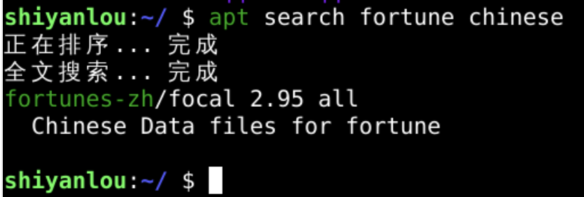
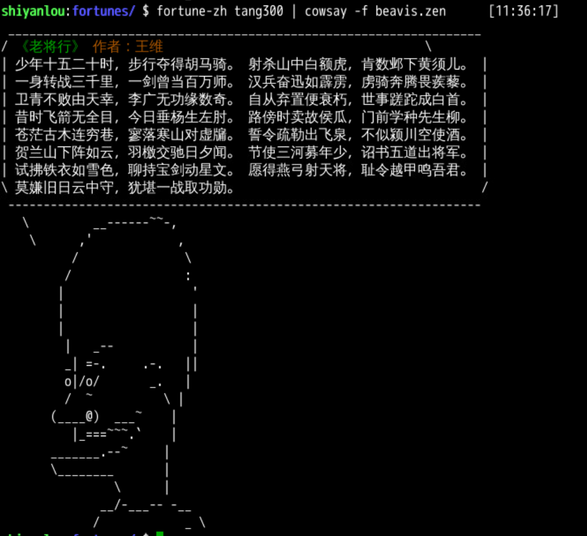
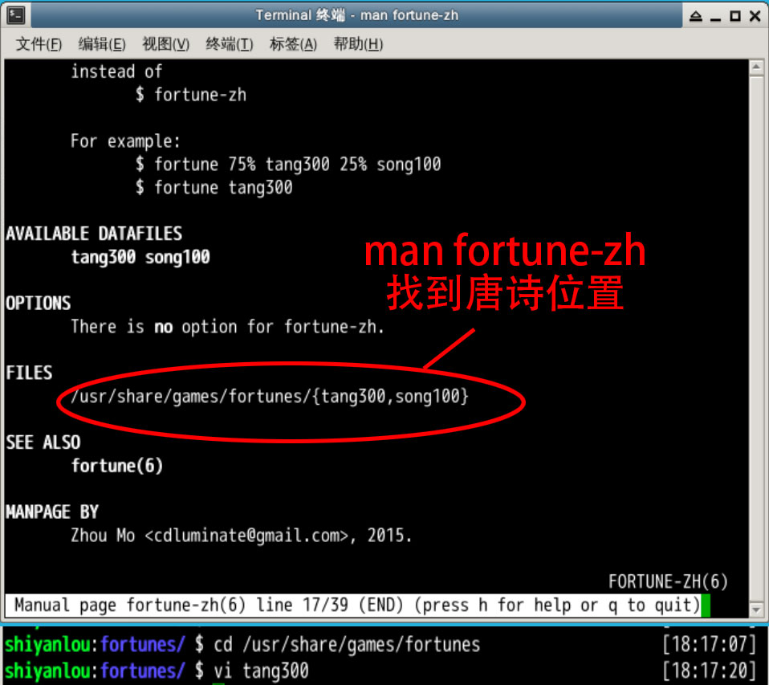
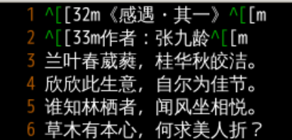
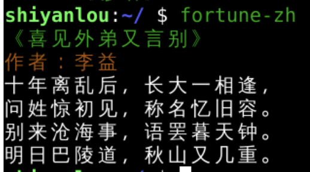

本章回顾
我们来回顾一下 😌
上一部分我们都讲了什么？🤔
- fortune是英文的
- 如果想来点中文的笑话或者诗歌可以么？
- 怎么来呢？🤔

那有没有中 🀄️ 文的 fortune 呢？
# 搜索一下 fortune
apt search fortune chinese
- 简介里匹配也可以

- 搜索到了
- 去下载吧～
中文 fortune
sudo apt install fortune-zh
fortune-zh
- /usr/share/games/fortunes/{tang300,song100}
- 这两个是中 🀄️ 文的是诗歌库
- tang300 唐诗三百首
- song100 一百首宋词
pipe
- 输出重定向到 cowsay

fortune-zh tangb300 | cowsay -f beavis.zen
彩色 🎨 的原理‼️
#进入fortunes-zh的素材文件夹
cd /usr/share/games/fortunes/
#查看素材
vi tang300

打开唐诗

- ^[[32m《感遇·其一》^[[m
- 这里面的^[是esc转义字符
- 相当于"\033"
- [32m代表绿的字体
- ^[[m代表回到原始字体
- 下面的33m意味着橙色字体

- 30~37 都可以设置并修改颜色 🎨
- 也可以建立自己的彩色俗语库
总结 🤨
- 下载了中 🀄️ 文谚语
- 输出重定向了中文谚语
- 理解词典和颜色
- 下次讲什么？🤔
- 下次再说！👋